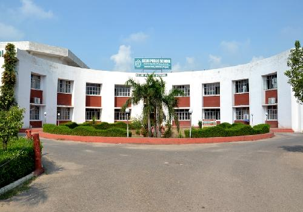
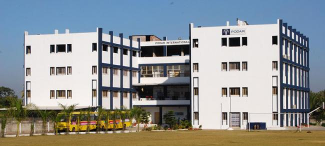

The Delhi Public School (DPS), Ahmedabad, was promoted in 1996 by the well-reputed Delhi Public School Society. It is a co-educational day school offering education from pre-primary to senior secondar..
More.....

| |
Way To School |
||
|
 |
Delhi Public School(DPS),Ahmedabad
The Delhi Public School (DPS), Ahmedabad, was promoted in 1996 by the well-reputed Delhi Public School Society. It is a co-educational day school offering education from pre-primary to senior secondar..
More..... |
|
 |
Podar International School,Ahmedabad
Podar International School is a group of various high schools in India. The group was established in 1927 by a Mumbai-based businessman Sheth Anandilal Podar. As of December 2014, the group had 78 schools across India. It was awarded the status of International Baccalaureate World School in 2005, and in 2011 was CIS (Council of International Schools) certified...
More..... |
 |
St. Kabir Institute,Ahmedabad
The St. Kabir Institute of Professional Studies is a business school located in Ahmedabad in the state of Gujarat, India. It offers a two-year full-time post-graduate diploma in management. The institute has held All India Council for Technical Education accreditation since 2008....
More..... |